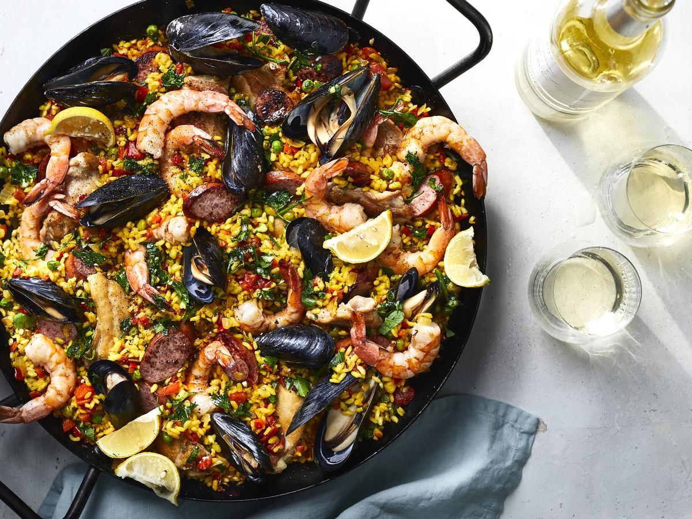

Paella
How to make Spanish Pajella
- Heat 1 tbsp olive oil in a large frying pan or wok. Add 1 chopped onion and soften for 5 mins.
- Stir in 1 tsp hot smoked paprika, 1 tsp dried thyme and 300g paella or risotto rice, stir for 1 min, then splash in 3 tbsp sherry or white wine, if using.
- Once it has evaporated, stir in a 400g can of chopped tomatoes with garlic and 900ml chicken stock.
- Season and cook, uncovered, for about 15 mins, stirring now and again until rice is almost tender and still surrounded with some liquid.
- Stir 400g frozen seafood mix into the pan and cover with a lid. Simmer for 5 mins, or until the seafood is cooked through and the rice is tender.Do not allow cross contamination between uncooked meats and foods that are eaten raw. Consider keeping a chopping board specifically for raw meat, and cleaning it thoroughly after each use.
-
Squeeze over the juice of ½ lemon, scatter with a handful of flat-leaf parsley and serve with wedges from the remaining ½ lemon.
